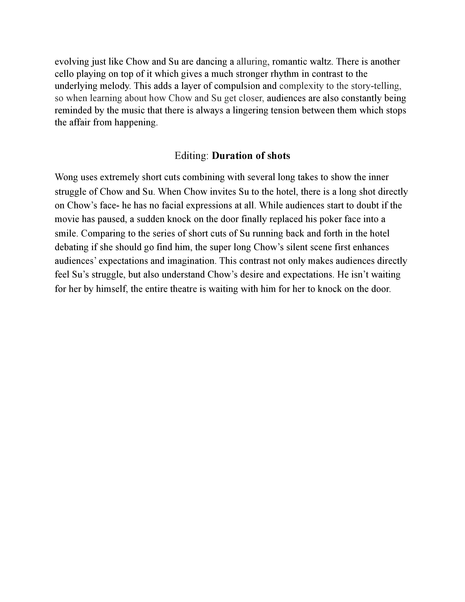
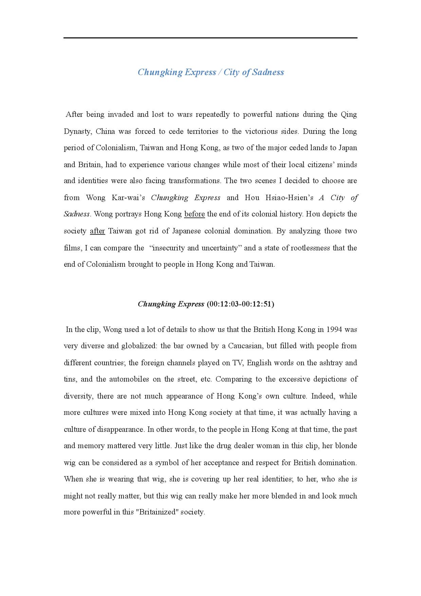
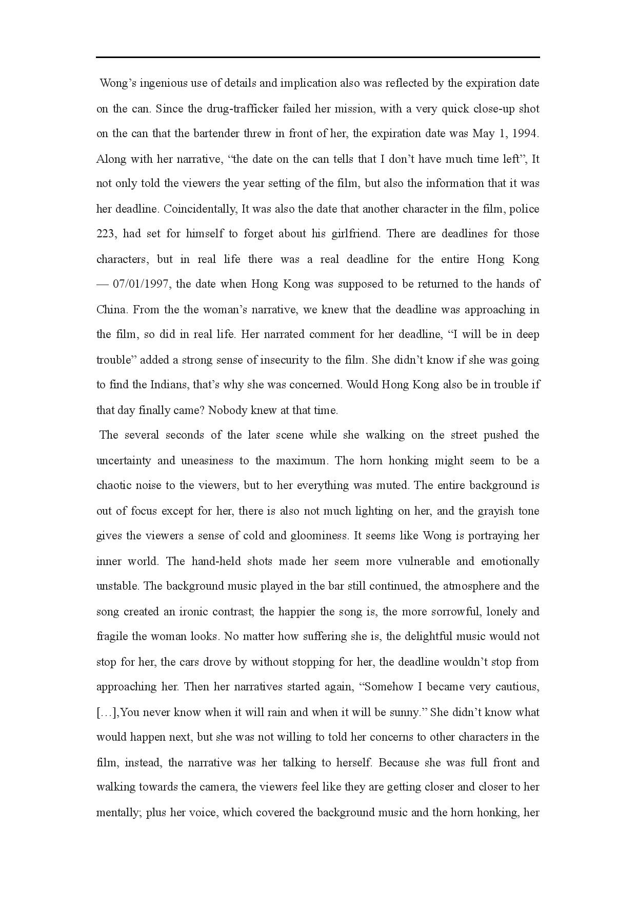
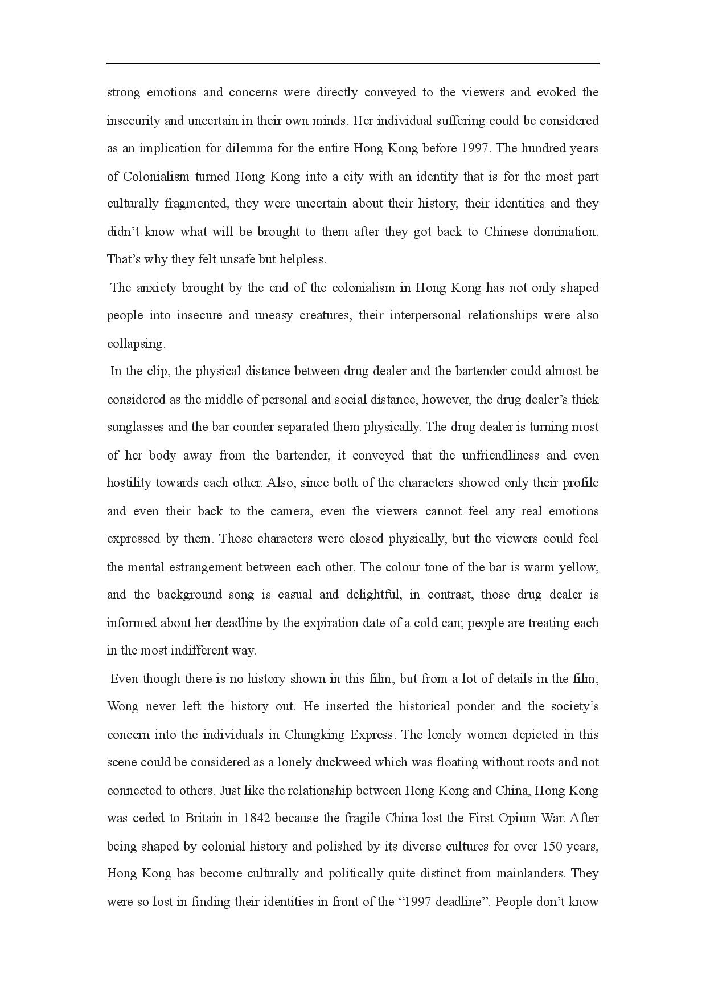
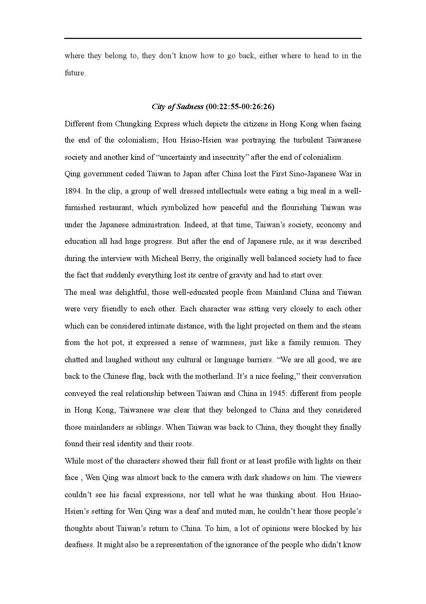
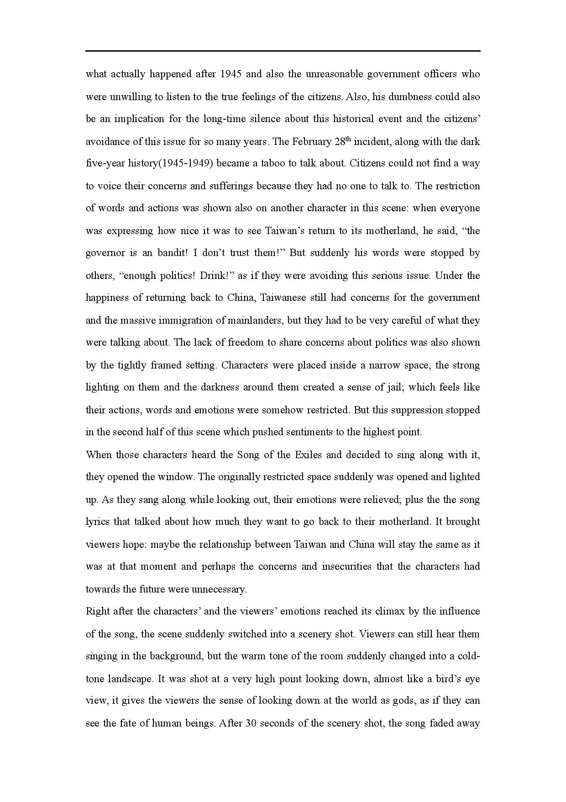

Background pic: Outlier series by myself
In the Mood for Love by Wong Kar-Wai
I absolutely love the costumes: the director uses the changes in Su’s costume to directly represent her changes in emotions. In the beginning of the film, she is wearing a bright dress which makes her brim with happiness. After she finds out about the affair, the flowery patterns on her dresses disappear, her dresses become so dark which almost blend into the shadow in the staircase, showing how lonely, depressed and painful she is. The bright colours and pleasing patterns come back when Chow and Su fall in love, the bright red coat she wears when she goes to the hotel, both represent how much she likes Chow. Finally when she decides to leave with Chow, she wears a green dress, showing how much she is looking forward to a new life with him. Over 25 costumes on Su take the audiences, like me, to an emotional roller coaster throughout the film.
Music, I need to talk about music and how it is used in this movie to shape the interactions between Chow and Su. The best example is Yumeji's Theme by Shigeru Umebayashi; This cello concerto in G-minor appears repetitively throughout the entire movie. As any other classical waltz, there is a lingering main melody with a tender rhythm; which is consistent with everything moving in slowmotion on the screen. Audiences then pay more attention to see this love relationship evolving just like Chow and Su are dancing a alluring, romantic waltz. There is another cello playing on top of it which gives a much stronger rhythm in contrast to the underlying melody. This adds a layer of compulsion and complexity to the story-telling, so when learning about how Chow and Su get closer, audiences are also constantly being reminded by the music that there is always a lingering tension between them which stops the affair from happening.
There are some extremely short cuts combining with several long takes to show the inner struggle of Chow and Su. When Chow invites Su to the hotel, there is a long shot directly on Chow’s face- he has no facial expressions at all. While audiences start to doubt if the movie has paused, a sudden knock on the door finally replaced his poker face into a smile. Comparing to the series of short cuts of Su running back and forth in the hotel debating if she should go find him, the super long Chow’s silent scene first enhances audiences’ expectations and imagination. This contrast not only makes audiences directly feel Su’s struggle, but also understand Chow’s desire and expectations. He isn’t waiting for her by himself, the entire theatre is waiting with him for her to knock on the door.
The closure is very interesting: He uses a very special way to end this movie, comparing to the fancy music and colors before, the ending part shot in Angkor Wat is very different in style. Chow has buried his secret for so long, all of the feelings he has for her, all thicken as time passes. In order to show the idea of time and hopelessness, putting in closure in a place with extremely long history such as Angkor Wat, is such a wise choice. The only blurry video tape cut he put in this movie is the documentary of the time when French president Charles de Gaulle visited Cambodia; that is the signature event which marked the end of colonial rule in Cambodia. He used the end of this old era as a metaphor indicating that everything from that era will no longer exists, including the Chow’s love for Su.